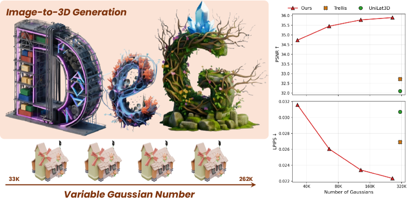
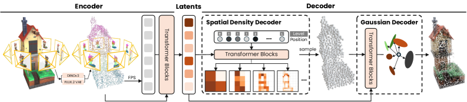
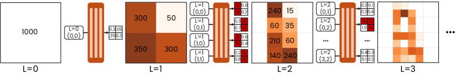
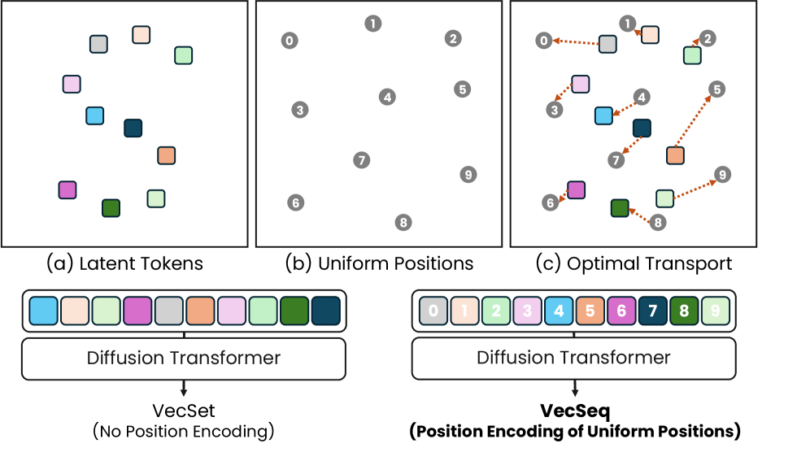
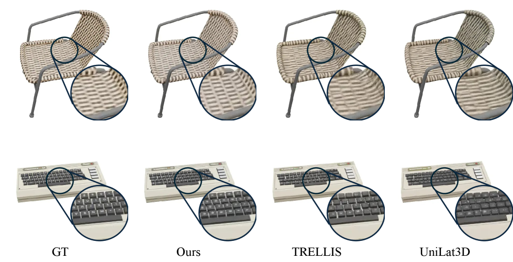
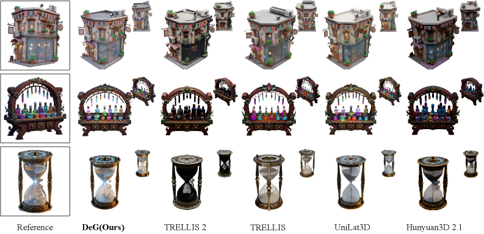

📌 论文概要
TripoSplat 提出了 Density-Sampled Gaussians (DeG)——一种专为生成式建模设计的 3D 表示。核心解决一个关键矛盾：3DGS 的密度控制（densification/pruning）是非可微的，无法直接用于生成模型训练。
| 属性 | 详情 |
|---|---|
| 机构 | 清华大学 (IIIS) / VAST AI Research |
| 作者 | Runjie Yan, Yan-Pei Cao, Peng Wang, Ding Liang, Yuan-Chen Guo |
| 会议 | SIGGRAPH 2026 Conference Papers |
| 开源 | ✅ GitHub: VAST-AI-Research/TripoSplat |
| 核心组件 | DeG-VAE（密度采样高斯变分自编码器）+ VecSeq Diffusion（序列化扩散 Transformer） |
| 任务 | 单图→3D 高斯生成（SOTA） |
🏗️ 模型架构
TripoSplat 由两大核心组件构成：
| 组件 | 功能 | 核心创新 |
|---|---|---|
| DeG-VAE | 编码 3D 资产→潜空间→解码为自适应密度的高斯 | 高斯中心从可学习 PDF 采样，密度可微优化 |
| VecSeq Diffusion | 在潜空间上训练扩散模型，条件为单张图像 | Sobol 序列重排序，消除集合生成的排列歧义 |
DeG-VAE 详细架构
DeG-VAE 分为编码器、密度解码器、高斯解码器三部分：
1. Set Encoder（集合编码器）
- 输入：3D 资产的多视角渲染图（K 个视角）
- 特征提取：DINOv3（语义一致性）+ FLUX.2 VAE（高频纹理细节）双路特征
- 从资产表面采样密集点云，投影到多视角特征图获取特征
- Farthest Point Sampling (FPS) 选 M 个代表点作为 transformer 注意力种子
- 输出：固定大小的潜码集合 Z = {z_i ∈ R^C}_{i=1}^M
2. Spatial Density Decoder（空间密度解码器）
- 输入：潜码集合 Z
- 输出：定义在 Octree 上的 3D 概率密度函数 (PDF)
- 逐级预测：从最粗层开始，迭代预测每个 occupied voxel 的密度值，直到最细层
- 采样：从 PDF 中采样 N 个高斯中心点，N 可任意调整
3. Gaussian Decoder（高斯属性解码器）
- 输入：采样点位置 + 潜码 + 图像特征
- 输出：每个点的 3D 高斯属性（位置偏移、旋转、缩放、颜色、不透明度）
- Local Expansion：每个采样点生成 1-4 个高斯（子点偏移），增加局部密度
VecSeq Diffusion Transformer
解决在无序集合潜码上训练扩散模型的核心难题：
- 问题：潜码集合 {z_i} 是无序的（permutation invariant），但扩散模型需要序列化输入。排列歧义导致梯度信号冲突，严重拖慢收敛
- VecSeq 方案：用 Optimal Transport 将无序 token 映射到确定的 3D Sobol 低差异序列上，赋予每个 token 一个确定的空间位置
- 效果：把困难的"集合生成"问题转化为稳定的"序列生成"问题，大幅加速收敛并提升生成质量
🎯 关键特性
- 可变分辨率输出：单个潜码 → 采样不同数量的高斯 → 从轻量到超密集，一套模型搞定
- 学习式密度控制：高斯自动集中在几何复杂区域（如细节丰富的表面），简单区域分配更少高斯
- 可微密度优化：render loss contribution gradient 让密度函数可端到端优化，不需要离散的 densify/prune
- VecSeq 稳定训练：Sobol 序列 + 最优传输解决集合扩散的排列歧义，收敛更快
- 双路特征编码：DINOv3 语义 + FLUX.2 VAE 纹理，兼顾结构和细节
- SOTA 质量：单图→3D 生成达到当时最优
- SIGGRAPH 2026：学术认可度高
🔬 技术细节
Octree-Based Density Sampling（八叉树密度采样）
- PDF 定义在八叉树上，分层表示空间密度分布
- 从最粗层开始，网络为每个 occupied voxel 预测密度值
- 根据密度值分配采样点数量：高密度 voxel 分配更多点
- 递归到最细层，最终得到 N 个 3D 采样点
- 效率：八叉树结构避免在空旷区域浪费采样点
Render Loss Contribution Gradient（渲染损失贡献梯度）
这是本文最核心的技术创新——让密度函数可微：
- 灵感：difference reward（Wolpert & Tumer, 2001）——衡量单个智能体对全局奖励的边际贡献
- 定义：移除某个采样点后渲染损失的变化量 = 该点对渲染的边际贡献
- 计算： fused CUDA 实现高效计算每个 primitive 的 render loss contribution
- reward clamping：限制梯度信号范围，防止极端值
- 效果：贡献大的区域（移除后渲染变差多）→ 密度增加；贡献小的区域 → 密度减少
Local Expansion（局部展开）
- 每个采样点不只生成一个高斯，而是 1-4 个（通过学习的偏移）
- 类似 3DGS 中 split 操作的效果——一个父高斯分裂为多个子高斯
- 增加局部表达力，同时保持采样点的全局结构
VecSeq 详解
- Sobol 序列：低差异准随机序列，在 3D 空间中均匀分布
- 最优传输映射：用 OT 将无序潜码 token 映射到 Sobol 序列点，每个 token 获得确定的空间锚点
- 序列化：按 Sobol 序列顺序排列 token，变成有序序列
- 扩散建模：在序列化后的 token 上训练 DiT (Diffusion Transformer)
- 对比 VecSet（无序集合）：VecSeq 收敛速度显著更快，生成质量更高
📊 基准表现
单图→3D 生成
在 Objaverse 大规模 3D 数据集上训练，在多个评测数据集上达到 SOTA：
- 对比方法：GaussianCube, Structured-latent 方法, Pixel-aligned 方法, TRELLIS 等
- 评测指标：CLIP-Score, FD (Fréchet Distance), KD (Kullback-Leibler Distance), User Study
- 定量结果：在多个指标上超越所有对比方法
- 定性结果：生成质量明显优于固定高斯数量的方法，尤其在细节区域
消融实验
- Variable-Sized Gaussians：不同采样数量（如 5K, 20K, 80K）下质量稳步提升，证明可变分辨率有效性
- Learned Density Control：密度可视化显示高斯集中在高复杂度区域，与人工直觉一致
- VecSeq vs VecSet：VecSeq 在相同训练步数下收敛更快、质量更好
- Token Length：潜码数量 M 的影响，更多 token → 更精细重建
💡 个人分析
核心贡献定位
TripoSplat 解决的是 3D 生成领域中一个长期存在的痛点：3DGS 的密度控制是它高质量的秘密，但这个秘密是非可微的，无法直接用于生成模型。之前所有生成式 3DGS 方法（GaussianCube、Structured-latent、Pixel-aligned）都在回避这个问题——用固定数量/固定结构的高斯，牺牲了 3DGS 最核心的自适应能力。TripoSplat 用 PDF 采样 + render loss contribution gradient 把密度控制变成可微操作，补上了这块拼图。
三大创新的技术深度
| 创新 | 解决的问题 | 技术优雅度 |
|---|---|---|
| DeG（PDF 采样高斯） | 固定数量→自适应数量 | ★★★★★ 解耦分布与属性 |
| Render Loss Contribution Gradient | 密度控制不可微 | ★★★★★ difference reward 的巧妙应用 |
| VecSeq | 集合扩散的排列歧义 | ★★★★ OT + Sobol 的组合 |
优势
- 恢复了 3DGS 的核心优势：自适应密度分配——复杂区域多分配，简单区域少分配
- 可变分辨率：一个模型出多精度资产，实用性强
- 端到端可微：不需要 per-scene 的 densify/prune 后处理
- 生成质量 SOTA：在 SIGGRAPH 2026 发表，经过严格学术验证
- 架构可扩展：基于 transformer + diffusion，可受益于更大模型/更多数据
局限
- Octree 分辨率上限：最细层决定了密度分布的最大分辨率，极细节可能丢失
- Local Expansion 固定数量：每个采样点 1-4 个高斯，不如 per-scene 3DGS 的无限 densify 灵活
- render loss contribution gradient 近似：是 difference reward 的近似，reward clamping 可能影响精度
- 生成 vs 重建：主要面向生成任务，直接用于多视图重建可能不如专门的重建方法
- 计算开销：OT 重排序 + 八叉树采样在训练时增加开销
与"围绕人物转圈"场景的关系
TripoSplat 是生成模型而非重建方法，不直接用于你的拍摄重建场景。但它的学习式密度控制思路有启发价值：
- Deformable-3DGS (p28) 的变形场 + 学习式密度控制 → 动态场景中自动调整高斯密度
- render loss contribution gradient 可用于动态重建中判断哪些区域需要更多高斯
- VecSeq 的排列问题解决思路对 4D 高斯生成也有参考价值
🖼️ arXiv HTML 论文原图
以下图片从 arXiv HTML 版本直接提取，展示论文原始架构图和结果对比。
Figure 1: Teaser — 可变高斯数量的生成示例

Figure 1: 最佳生成样本，展示可变数量的 3D 高斯 — 单个潜表示可解码出任意数量的 3D 高斯。
Figure 2: DeG-VAE 概览 — 密度采样高斯变分自编码器

Figure 2: DeG-VAE 概览。多视角渲染通过特征提取器编码，特征投影到随机采样的表面点。空间密度解码器建模高斯的空间分布，高斯解码器预测属性用于可微渲染。渲染损失可反传到密度解码器实现自适应密度控制。
Figure 3: 点采样过程 — 2D 示意图

Figure 3: 点采样过程的 2D 示意。从最粗层开始，网络迭代预测每个 occupied voxel 的密度值直到最细层。格中数字表示在 1000 点目标下各 voxel 分配的点数。
Figure 4: 编码、解码和生成的详细架构

Figure 4: (a) 编码器、(b) 解码器、(c) 生成模型的详细架构。Refiners 用于处理不同模态输入，DiT 中使用轻量头预测 3D 索引以支持 RoPE。
Figure 5: VecSeq 重排序 — 将无序集合转为有序序列

Figure 5: VecSeq 重排序。潜 token 在编码时关联 3D 位置，通过匹配 3D Sobol 锚点进行规范排序，将无序潜集合转化为稳定向量序列用于扩散去噪。
Figure 6: 3D 重建定性对比

Figure 6: 3D 重建定性对比。在匹配高斯预算下（DeG-VAE 262K vs 基线~310K），DeG-VAE 实现更高视觉保真度，细节保留显著优于基线。
Figure 7: 生成对比 — 与纹理 3D 生成模型比较

Figure 7: 生成对比。与代表性纹理 3D 生成模型在相同渲染设置下的比较。TripoSplat 生成结构准确、外观细节丰富的高斯资产。
📐 算法框图
请参考论文原文 Figure 2 (DeG-VAE Overview) 和 Figure 4 (Detailed Architecture)。
💡 核心创新点
- Density-Sampled Gaussians (DeG)：高斯中心从可学习 PDF 采样，解耦空间分布与属性，支持可变分辨率输出。首次让生成式 3DGS 拥有自适应密度能力
- Render Loss Contribution Gradient：基于 difference reward 的可微密度优化信号，是 3DGS 离散 densify/prune 的连续可微等价物。fused CUDA 实现保证效率
- VecSeq Canonical Re-indexing：用 OT + Sobol 序列将无序集合潜码转化为有序序列，解决扩散模型在集合数据上的排列歧义，大幅加速收敛
- Octree-Based Adaptive Sampling：分层八叉树密度表示，避免空旷区域浪费采样点，高效分配高斯
- 双路特征编码：DINOv3 语义 + FLUX.2 VAE 纹理，兼顾全局结构和局部细节
🎯 应用场景
| 场景 | 输入 | 输出 | 说明 |
|---|---|---|---|
| 单图→3D 生成 | 1 张图像 | 3D 高斯模型 | 核心应用，SOTA 质量 |
| 多精度资产输出 | 同一潜码 | 不同精度 3D 模型 | 移动端轻量 → 高保真渲染，一套模型 |
| 3D 内容创作 | 概念图/照片/生成图 | 可渲染 3D 资产 | 游戏/影视/电商 |
| AR/VR 内容 | 参考图像 | 实时可渲染 3D | 高斯光栅化天然支持实时 |
| 3D 资产数据库 | 批量图像 | 批量 3D 模型 | 规模化 3D 内容生产 |
🏋️ 训练策略
DeG-VAE 训练
- 数据：Objaverse 大规模 3D 物体数据集
- 编码器特征提取器：DINOv3 + FLUX.2 VAE（均预训练，冻结或微调）
- 渲染监督：从 3D 资产渲染多视角图像作为 GT
- 密度优化：render loss contribution gradient 端到端优化 PDF
- Structural Initialization：用 SfM 点云初始化八叉树密度，提供合理起点
VecSeq Diffusion 训练
- 架构：Diffusion Transformer (DiT)
- 条件：单张输入图像的 CLIP/DINOv3 特征
- 训练范式：标准 latent diffusion（加噪→去噪）
- 重排序：每个训练样本先用 OT 将潜码映射到 Sobol 序列
- 可扩展性：Transformer 架构，可通过增大模型/数据持续提升
📊 数据集构建
| 数据集 | 类型 | 用途 |
|---|---|---|
| Objaverse | 合成（大规模 3D 物体） | 训练数据主要来源 |
| GSO (Google Scanned Objects) | 真实扫描 | 评测基准 |
| OmniObject3D | 合成+扫描 | 补充评测 |
| 真实照片/生成图像 | 真实 | 泛化能力测试 |
训练数据构建：从 3D 模型渲染多视角图像 → 编码为潜码 → 训练 VAE 重建 → 训练扩散模型生成潜码。单图条件生成：图像→CLIP/DINOv3 特征→条件扩散→潜码→DeG 解码→3D 高斯。
📐 损失函数
DeG-VAE 损失
- 多视角渲染损失：L_render = Σ_k L1(I_render^k, I_gt^k) + λ · LPIPS(I_render^k, I_gt^k)
- 密度优化信号：render loss contribution gradient（非传统损失，是梯度信号）
- KL 正则化：VAE 的标准 KL 散度损失，约束潜空间分布
- 总损失：L_VAE = L_render + λ_KL · L_KL + λ_reg · L_reg
VecSeq Diffusion 损失
- 标准去噪扩散损失：L_diff = E_{t,ε} ||ε - ε_θ(z_t, t, c)||²
- z_t：加噪的序列化潜码，t：时间步，c：图像条件
🔄 技术路线对比与演进
3D 高斯生成方法对比
| 方法 | 高斯数量 | 密度控制 | 表示结构 | 自适应 |
|---|---|---|---|---|
| GaussianCube | 固定 N³ | 无（预拟合） | 体素网格 | ❌ |
| Structured-latent (TRELLIS等) | 每体素固定 | 无 | 稀疏体素 | ❌ |
| Pixel-aligned (LGM等) | 每像素/patch固定 | 无 | 图像对齐 | ❌ |
| MaskGaussian | 固定 scaffold | mask 预测 | 固定空间框架 | 有限 |
| F4Splat | 前馈+学习分数 | 启发式分数 | 前馈 | 部分 |
| TripoSplat (DeG) | 可变 | 学习式 PDF | 八叉树 PDF | ✅ 强 |
技术演进脉络
- 3DGS 密度控制演进：3DGS（离散 densify/prune）→ 3DGS-MCMC（MCMC 采样）→ F4Splat（前馈学习分数）→ TripoSplat（可微 PDF 采样）
- 3D 高斯生成演进：DreamGaussian（SDS+3DGS）→ GaussianCube（固定网格）→ Structured-latent（稀疏体素）→ TripoSplat（自适应 PDF）
- 潜空间 3D 生成演进：3DShape2VecSet（无序集合）→ CLAY/TripoSG（大规模）→ TRELLIS（结构化潜在）→ TripoSplat（VecSeq 序列化）
与知识库相关论文的关系
- → 3DGS Survey (p20)：TripoSplat 是 3DGS 密度控制从"离散启发式"到"可微学习式"的终极进化
- → TRELLIS (p24)：TRELLIS 的 SLAT 是结构化潜在表示，TripoSplat 的 DeG 可视为"密度自适应的 SLAT"——在 SLAT 基础上恢复了高斯的自适应分配能力
- → TriplaneGaussian/TGS (p29)：TGS 用 Triplane 提供结构化特征空间，TripoSplat 用 PDF 采样提供自适应结构——两种解决"高斯非结构化"问题的不同路线
- → 3D Generation (p22)：DreamGaussian 用 SDS+3DGS 生成，TripoSplat 用 latent diffusion + DeG 生成，范式升级
- → VGGT (p26)：VGGT 的前馈重建是"重建"路线，TripoSplat 是"生成"路线，两者互补
- → Deformable-3DGS (p28)：Deformable 的变形场 + TripoSplat 的学习式密度控制 → 可实现"自适应密度 + 时间变形"的 4D 生成
- → Hunyuan3D (p25)：Hunyuan3D 用 DiT 做 3D 生成，TripoSplat 也用 DiT 但在 DeG 潜空间上操作